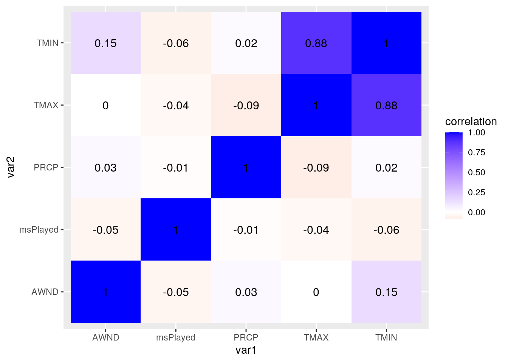
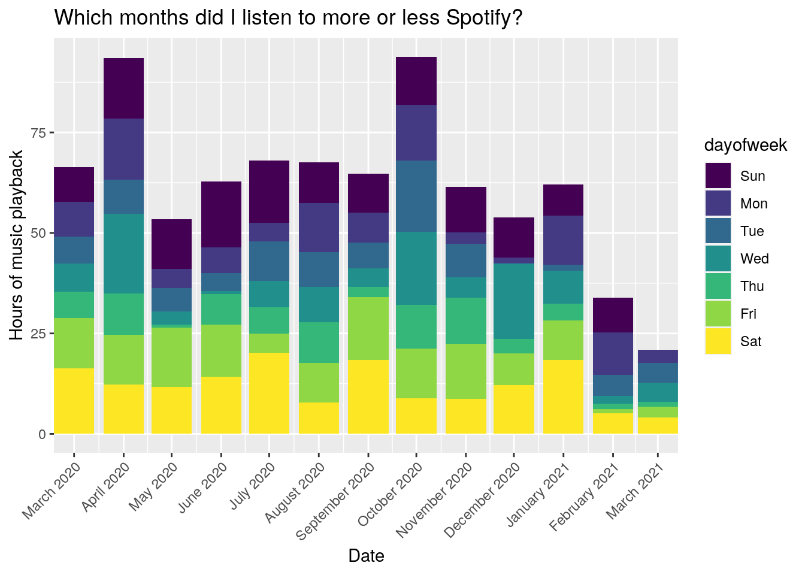
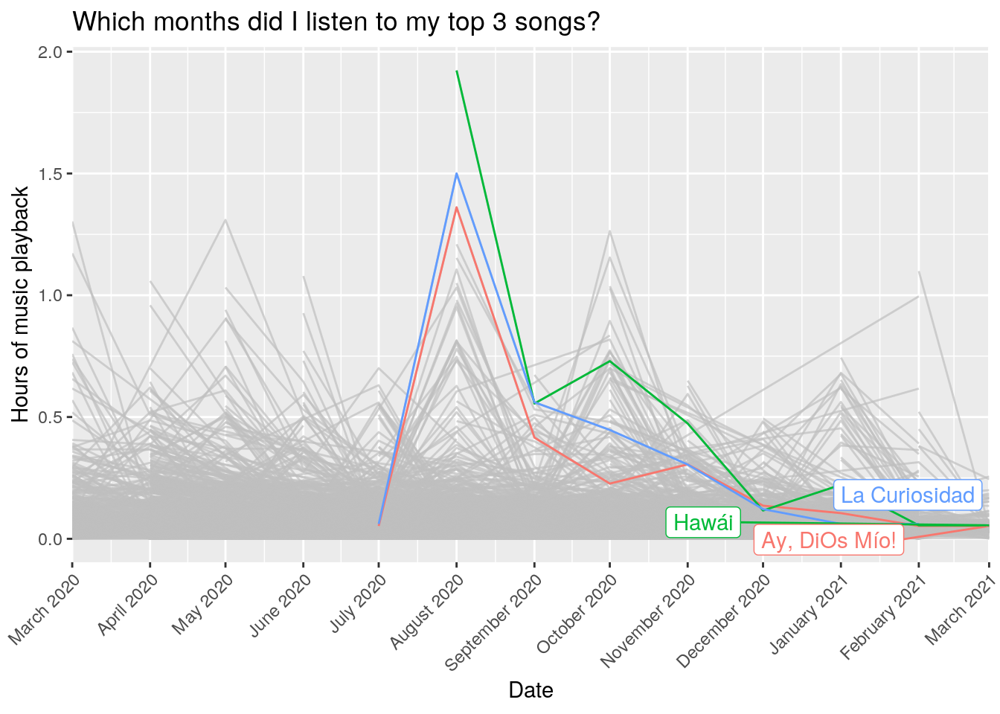

The two datasets explored in this project come from my Spotify listening history and from a weather station located Camp Mabry in Austin, TX. Spotify listening history was requested through the Spotify website, and the weather station data came from the National Oceanic and Atmospheric Administration (NOAA) website. The time period of interest for this exploratory analysis is between March 6, 2020 and March 6, 2021.
First things first. Loading up the required libraries.
library(tidyverse)
library(jsonlite)
library(dplyr)
library(lubridate)
library(gghighlight)
library(cluster)
library(GGally)Next, reading in the data from Spotify and from NOAA.
streamhist0 <- fromJSON("StreamingHistory0.json")
streamhist1 <- fromJSON("StreamingHistory1.json")
weather <- read_csv("2526455.csv")Here, the two streaming history files are cleaned up by combining them into a single dataset. The date and time information are separated into two columns to allow joining to the weather dataset more easily later on. Also, the date column is converted from a character format to a date format for both datasets.
streamhist <- rbind(streamhist0, streamhist1)
streamhist <- streamhist %>% separate(endTime, sep = " ",
into = c("date", "time"))
streamhist$date <- as.Date(streamhist$date)
weather$DATE <- as.Date(weather$DATE, "%m/%d/%Y")I did a left join to join the weather data to my Spotify listening history data. A left join works for this case because I want to retain all of my Spotify data, and I’m only interested in the weather data that matches my Spotify listening observations. The left join matches each listening observation to each weather observation based on the date information, which is present in both datasets. There were 19428 observations for the streamhist data and 386 observations for the weather data.
fulldata <- left_join(streamhist, weather, by = c(date = "DATE"))An additional column that contains the day of week has been added. For the weather data, the Camp Mabry data because it contains temperature information.
## Using all six core functions to manipulate and
## explore dataset
# adding day of week label
fulldata <- fulldata %>% mutate(dayofweek = wday(date,
label = T))
# using pivot wider to summarize msPlayed by each
# artist
fulldata %>% pivot_wider(names_from = artistName, values_from = msPlayed,
values_fn = sum)## # A tibble: 19,264 x 3,062
## date time trackName STATION NAME AWND PRCP SNOW SNWD TAVG TMAX
## <date> <chr> <chr> <chr> <chr> <dbl> <dbl> <dbl> <dbl> <lgl> <dbl>
## 1 2020-03-06 00:01 Rojo USW000… AUST… 4.92 0 0 0 NA 71
## 2 2020-03-06 00:03 Ganas de… USW000… AUST… 4.92 0 0 0 NA 71
## 3 2020-03-06 04:16 Caribou … USW000… AUST… 4.92 0 0 0 NA 71
## 4 2020-03-06 04:20 De Vez E… USW000… AUST… 4.92 0 0 0 NA 71
## 5 2020-03-06 04:22 algo due… USW000… AUST… 4.92 0 0 0 NA 71
## 6 2020-03-06 04:23 No es pa… USW000… AUST… 4.92 0 0 0 NA 71
## 7 2020-03-06 04:23 Rojo USW000… AUST… 4.92 0 0 0 NA 71
## 8 2020-03-06 04:23 algo due… USW000… AUST… 4.92 0 0 0 NA 71
## 9 2020-03-06 04:23 Ayer USW000… AUST… 4.92 0 0 0 NA 71
## 10 2020-03-06 04:26 Encima D… USW000… AUST… 4.92 0 0 0 NA 71
## # … with 19,254 more rows, and 3,051 more variables: TMIN <dbl>, TOBS <lgl>,
## # WDF2 <dbl>, WDF5 <dbl>, WESD <lgl>, WESF <lgl>, WSF2 <dbl>, WSF5 <dbl>,
## # WT01 <dbl>, WT02 <dbl>, WT03 <dbl>, WT04 <dbl>, WT05 <lgl>, WT06 <dbl>,
## # WT08 <dbl>, WT09 <lgl>, dayofweek <ord>, `J Balvin` <int>, `Wisin &
## # Yandel` <int>, `Tech N9ne` <int>, `Johan Sotelo` <int>, `Natalia
## # Lacunza` <int>, `Carlos Baute` <int>, `Leo Bash` <int>, `Alejandro
## # Santamaria` <int>, Residente <int>, Arevalo <int>, `Bad Bunny` <int>, `Jary
## # Franco` <int>, Maluma <int>, `Kany Garcia` <int>, `Natti Natasha` <int>,
## # `Rauw Alejandro` <int>, `Ovy On The Drums` <int>, `Andy Rivera` <int>,
## # `Piso 21` <int>, `Abraham Mateo` <int>, `Cali Y El Dandee` <int>,
## # Juanes <int>, Maná <int>, Dalex <int>, `Alaina Castillo` <int>, `Christian
## # Nodal` <int>, Morat <int>, `Carlos Vives` <int>, Cazzu <int>, `Carlos
## # Arroyo` <int>, Fuego <int>, Buscabulla <int>, `The Marías` <int>,
## # Rubio <int>, `Jessie Reyez` <int>, `Debi Nova` <int>, `KAROL G` <int>,
## # `Anuel AA` <int>, `Daddy Yankee` <int>, `Nicky Jam` <int>, Shakira <int>,
## # `Myke Towers` <int>, `Dímelo Flow` <int>, `Sebastian Yatra` <int>, `Viva
## # Latino: Original Videos` <int>, `Chicano Batman` <int>, `Jenni
## # Rivera` <int>, `Joan Sebastian` <int>, `Salt Cathedral` <int>, `Río
## # Roma` <int>, Guaynaa <int>, Brytiago <int>, `Kidd Keo` <int>, `Lenny
## # Tavárez` <int>, `Mau y Ricky` <int>, `Ricky Martin` <int>, Lasso <int>,
## # `Josue Alaniz` <int>, `Ricardo Montaner` <int>, Lucah <int>, `Pablo
## # Alborán` <int>, Matisse <int>, `Alejandro Fernández` <int>, `Alejandro
## # Sanz` <int>, `Christian Daniel` <int>, `Noel Schajris` <int>, Zeri <int>,
## # Camila <int>, `Carolina Ross` <int>, Fonseca <int>, Mijares <int>, `José
## # Luis Perales` <int>, `Paula Arenas` <int>, `Sofia Ellar` <int>, `Steve
## # Aoki` <int>, `Marko Silva` <int>, `Playa Limbo` <int>, `Romeo El
## # Santo` <int>, Blenfre <int>, Carriazo <int>, Buxxi <int>, `J Carva` <int>,
## # `Ralphy Dreamz` <int>, …# total hours of music played each month: most
# hours played in October 2020
fulldata %>% select(date, msPlayed) %>% group_by(date = floor_date(date,
"month")) %>% summarize(hrs_played = sum(msPlayed)/3600000) %>%
arrange(-hrs_played)## # A tibble: 13 x 2
## date hrs_played
## <date> <dbl>
## 1 2020-10-01 93.8
## 2 2020-04-01 93.4
## 3 2020-07-01 68.1
## 4 2020-08-01 67.6
## 5 2020-03-01 66.4
## 6 2020-09-01 64.8
## 7 2020-06-01 62.7
## 8 2021-01-01 62.1
## 9 2020-11-01 61.4
## 10 2020-12-01 53.8
## 11 2020-05-01 53.4
## 12 2021-02-01 33.9
## 13 2021-03-01 20.9# most popular artists in October and TAVG for each
# of those
fulldata %>% select(date, msPlayed, artistName, TMAX) %>%
group_by(date = floor_date(date, "month"), artistName,
TMAX) %>% summarize(hrs_played = sum(msPlayed)/3600000) %>%
arrange(-hrs_played)## # A tibble: 11,179 x 4
## # Groups: date, artistName [6,372]
## date artistName TMAX hrs_played
## <date> <chr> <dbl> <dbl>
## 1 2020-04-01 Khalid 89 4.22
## 2 2020-05-01 Kany Garcia 89 4.07
## 3 2020-04-01 Khalid 80 3.67
## 4 2020-06-01 Bossa Nova Jazz 86 2.98
## 5 2020-08-01 Jerry Di 103 2.68
## 6 2020-05-01 Kany Garcia 85 2.53
## 7 2020-11-01 Kany Garcia 84 2.50
## 8 2020-05-01 Jazz Lounge Bar 95 2.23
## 9 2020-08-01 Justin Bieber 104 1.80
## 10 2020-10-01 Khalid 85 1.71
## # … with 11,169 more rows# total no. of hours played by day of week
fulldata %>% select(dayofweek, msPlayed) %>% group_by(dayofweek) %>%
summarize(total_hrs = sum(msPlayed)/3600000)## # A tibble: 7 x 2
## dayofweek total_hrs
## * <ord> <dbl>
## 1 Sun 138.
## 2 Mon 103.
## 3 Tue 88.5
## 4 Wed 107.
## 5 Thu 77.1
## 6 Fri 130.
## 7 Sat 158.# artist with most no. of hours played
fulldata %>% select(artistName, msPlayed) %>% group_by(artistName) %>%
summarize(total_hrs = sum(msPlayed)/3600000) %>%
arrange(-total_hrs)## # A tibble: 3,034 x 2
## artistName total_hrs
## <chr> <dbl>
## 1 Kany Garcia 21.1
## 2 Maluma 14.1
## 3 Khalid 13.0
## 4 Justin Bieber 9.95
## 5 Bad Bunny 9.85
## 6 J Balvin 9.45
## 7 Farruko 7.70
## 8 KAROL G 7.68
## 9 Camilo 7.35
## 10 Ozuna 7.33
## # … with 3,024 more rows# song with most no. of hours played
fulldata %>% select(trackName, artistName, msPlayed) %>%
group_by(trackName, artistName) %>% summarize(total_hrs = sum(msPlayed)/3600000) %>%
arrange(-total_hrs)## # A tibble: 6,740 x 3
## # Groups: trackName [6,407]
## trackName artistName total_hrs
## <chr> <chr> <dbl>
## 1 Hawái Maluma 4.13
## 2 La Curiosidad Jay Wheeler 3.12
## 3 Ay, DiOs Mío! KAROL G 2.71
## 4 Intentions Justin Bieber 2.68
## 5 Anaranjado Jowell & Randy 2.68
## 6 Favorito Camilo 2.27
## 7 UN DIA (ONE DAY) (Feat. Tainy) J Balvin 2.22
## 8 Loco - Remix Farruko 2.20
## 9 Raro Nacho 2.17
## 10 Te Olvidaré MYA 2.12
## # … with 6,730 more rows## Creating summary stats for each numeric variable
## (msPlayed, TMIN, TMAX, and PRCP)
# creating summary stats for msPlayed, Tmin, TMAX,
# and PRCP overall
fulldata %>% select(msPlayed, TMIN, TMAX, PRCP) %>%
mutate(minPlayed = msPlayed/60000) %>% summarize_all(mean)## msPlayed TMIN TMAX PRCP minPlayed
## 1 148689.7 61.04288 83.91651 0.08989139 2.478162fulldata %>% select(msPlayed, TMIN, TMAX, PRCP) %>%
mutate(minPlayed = msPlayed/60000) %>% summarize_all(sd)## msPlayed TMIN TMAX PRCP minPlayed
## 1 100321.7 14.03423 13.90044 0.313449 1.672028fulldata %>% select(msPlayed, TMIN, TMAX, PRCP) %>%
mutate(minPlayed = msPlayed/60000) %>% summarize_all(min)## msPlayed TMIN TMAX PRCP minPlayed
## 1 0 8 25 0 0fulldata %>% select(msPlayed, TMIN, TMAX, PRCP) %>%
mutate(minPlayed = msPlayed/60000) %>% summarize_all(max)## msPlayed TMIN TMAX PRCP minPlayed
## 1 2061307 83 108 2.37 34.35512# creating summary stats for grouping by artistName
# & day of week
fulldata %>% select(msPlayed, TMIN, TMAX, PRCP, AWND,
artistName, dayofweek) %>% group_by(dayofweek,
artistName) %>% summarize(total_hrs = sum(msPlayed)/3600000,
mean_tmin = mean(TMIN), mean_tmax = mean(TMAX),
mean_prcp = mean(PRCP), mean_windsp = mean(AWND)) %>%
arrange(-total_hrs)## # A tibble: 6,443 x 7
## # Groups: dayofweek [7]
## dayofweek artistName total_hrs mean_tmin mean_tmax mean_prcp mean_windsp
## <ord> <chr> <dbl> <dbl> <dbl> <dbl> <dbl>
## 1 Fri Kany Garcia 5.68 65.6 85.7 0.215 4.25
## 2 Sat Kany Garcia 5.31 63.3 87.2 0.121 2.66
## 3 Sat Maluma 4.51 59.5 80.6 0.265 4.17
## 4 Sun Kany Garcia 4.50 69.5 86.5 0.0348 4.61
## 5 Tue Khalid 4.38 70 89.3 0.0005 2.74
## 6 Mon Khalid 3.86 59.6 78.8 0 1.99
## 7 Thu The Daily 3.22 49.8 74.7 0.005 3.82
## 8 Fri Bossa Nova Jazz 3.05 70.6 85.9 0.560 5.01
## 9 Sat Bad Bunny 2.83 57.4 78.2 0.09 4.36
## 10 Sun Maluma 2.79 59.8 84.7 0.0606 4.54
## # … with 6,433 more rows# creating summary stats for grouping by trackName
# & day of week
fulldata %>% select(msPlayed, TMIN, TMAX, PRCP, AWND,
trackName, dayofweek) %>% group_by(dayofweek, trackName) %>%
summarize(total_hrs = sum(msPlayed)/3600000, mean_tmin = mean(TMIN),
mean_tmax = mean(TMAX), mean_prcp = mean(PRCP),
mean_windsp = mean(AWND)) %>% arrange(-total_hrs)## # A tibble: 11,644 x 7
## # Groups: dayofweek [7]
## dayofweek trackName total_hrs mean_tmin mean_tmax mean_prcp mean_windsp
## <ord> <chr> <dbl> <dbl> <dbl> <dbl> <dbl>
## 1 Sun Favorito 1.06 62.7 91.2 0.0584 4.20
## 2 Sun Loco - Remix 1.04 69.9 95.4 0.00522 3.58
## 3 Sun La Curiosidad 0.956 64.5 89.6 0.00130 3.90
## 4 Sat Hawái 0.943 63.7 88 0.232 3.27
## 5 Thu Intentions 0.895 66.1 91 0.0782 3.46
## 6 Sun TBT - Remix 0.878 70.3 94.5 0.00267 3.64
## 7 Thu The Field: The… 0.839 40 64 0 5.82
## 8 Sun Te Olvidaré 0.814 70.0 92.2 0.0015 4.96
## 9 Sat La Santa 0.803 60.7 79.9 0.0153 4.76
## 10 Sat La Curiosidad 0.792 70.2 93.5 0.0818 3.28
## # … with 11,634 more rows# creating summary stats for grouping by artist &
# month
fulldata %>% select(date, msPlayed, TMIN, TMAX, PRCP,
AWND, artistName, dayofweek) %>% group_by(artistName,
month = floor_date(date, "month")) %>% summarize(total_hrs = sum(msPlayed)/3600000,
mean_tmin = mean(TMIN), mean_tmax = mean(TMAX),
mean_prcp = mean(PRCP), mean_windsp = mean(AWND)) %>%
arrange(-total_hrs)## # A tibble: 6,372 x 7
## # Groups: artistName [3,034]
## artistName month total_hrs mean_tmin mean_tmax mean_prcp mean_windsp
## <chr> <date> <dbl> <dbl> <dbl> <dbl> <dbl>
## 1 Khalid 2020-04-01 10.0 66.1 86.0 0.00105 2.51
## 2 Kany Garcia 2020-05-01 9.46 67.8 86.2 0.497 3.85
## 3 Bossa Nova Ja… 2020-06-01 3.87 73.0 87.6 0.472 5.49
## 4 Kany Garcia 2020-06-01 3.73 73.4 94.5 0.109 3.96
## 5 Maluma 2020-08-01 3.68 73.9 100. 0.312 4.09
## 6 Justin Bieber 2020-08-01 3.02 74.7 103. 0.0187 3.19
## 7 The Daily 2020-11-01 2.94 58.1 83.4 0 3.35
## 8 Ozuna 2020-10-01 2.87 57.9 84.1 0.0359 4.28
## 9 Jerry Di 2020-08-01 2.87 76.8 103. 0 5.82
## 10 Kany Garcia 2020-11-01 2.68 62.4 82.3 0.00944 3.51
## # … with 6,362 more rows# creating summary stats for grouping by trackName
# & month
trackmonth <- fulldata %>% select(date, msPlayed, TMIN,
TMAX, PRCP, AWND, trackName, dayofweek) %>% group_by(trackName,
month = floor_date(date, "month")) %>% summarize(total_hrs = sum(msPlayed)/3600000,
mean_tmin = mean(TMIN), mean_tmax = mean(TMAX),
mean_prcp = mean(PRCP), mean_windsp = mean(AWND)) %>%
arrange(-total_hrs)
# creating summary stats by grouping by month & day
# of week
monthday <- fulldata %>% select(date, msPlayed, TMIN,
TMAX, PRCP, AWND, trackName, dayofweek) %>% group_by(month = floor_date(date,
"month"), dayofweek) %>% summarize(total_hrs = sum(msPlayed)/3600000,
mean_tmin = mean(TMIN), mean_tmax = mean(TMAX),
mean_prcp = mean(PRCP), mean_windsp = mean(AWND)) %>%
arrange(month, dayofweek)
# correlation matrix for numeric variables
cormat <- fulldata %>% select(msPlayed, TMIN, TMAX,
PRCP, AWND) %>% cor(use = "pair")Most of the variables are only slightly negatively correlated. The only two variables that have a strong positive correlation are TMAX and TMIN.
## Correlation Heat Map of Numeric Variables
tidycor <- cormat %>% as.data.frame() %>% rownames_to_column("var1") %>%
pivot_longer(-1, names_to = "var2", values_to = "correlation")
tidycor %>% ggplot(aes(var1, var2, fill = correlation)) +
geom_tile() + scale_fill_gradient2(low = "red",
mid = "white", high = "blue") + geom_text(aes(label = round(correlation,
2)), color = "black", size = 4)
This plot shows the total number of hours of Spotify played for each month. For each day of the week, the total number of hours were added up together and stacked into a column to show the total number of hours listened per month. Overall, April and October were the two months with the most hours listened. In terms of day of the week, July, September, and January, had Saturdays clocking in the most hours listened.
## Which months did I listen to more or less
## Spotify?
monthday %>% mutate(dayofweek = as.factor(dayofweek)) %>%
ggplot(aes(month, total_hrs)) + geom_col(aes(fill = dayofweek)) +
labs(x = "Date", y = "Hours of music playback") +
scale_x_date(breaks = "1 month", date_labels = "%B %Y",
expand = c(0, 0)) + theme(axis.text.x = element_text(angle = 45,
hjust = 1)) + ggtitle("Which months did I listen to more or less Spotify?") Each line on this plot represents a song that was played. My top three songs are highlighted in green, blue, and red. It looks like I listened to my favorite songs of the year the most during the month of August (where I actually did a road trip between Austin and Phoenix). While I still love these songs, my hours listened tapered off over time as I found new favorite songs.
## On what dates did I listen to my top 3 songs?
trackmonth %>% ggplot(aes(month, total_hrs, group = trackName)) +
labs(x = "Date", y = "Hours of music playback") +
scale_x_date(breaks = "1 month", date_labels = "%B %Y",
expand = c(0, 0)) + theme(axis.text.x = element_text(angle = 45,
hjust = 1)) + ggtitle("Which months did I listen to my top 3 songs?") +
geom_line(aes(color = trackName)) + gghighlight(trackName ==
"Hawái" || trackName == "La Curiosidad" || trackName ==
"Ay, DiOs Mío!")
I performed PAM clustering on msPlayed and various weather-related numeric variables to see if there’s any regularity in the data. I tested up to five clusters to see what is the optimal number of clusters based on silhouette width. PAM clustering was computationally expensive on this dataset of 19428 observations.
# PAM clustering
PAM_clust <- fulldata %>% select(msPlayed, TMAX, TMIN,
AWND, PRCP) %>% scale() %>% as.data.frame()
sil_width <- vector()
for (i in 2:5) {
pam_fit <- pam(PAM_clust, k = i)
sil_width[i] <- pam_fit$silinfo$avg.width
}
ggplot() + geom_line(aes(x = 1:5, y = sil_width)) +
scale_x_continuous(name = "k", breaks = 1:5)Here, the correlation matrix shows that msPlayed has the strongest (negative) correlation with min temperature for the day, TMIN, and the weakest correlation with precipitation, PRCP.The group 1 (red) captures amount of time listened to Spotify on days where TMIN is about 60 degrees or colder, and group 2(blue) caputres the amount of time listened when TMIN ishigher than 60 degrees.
pam1 <- pam(PAM_clust, 2)
fulldata %>% mutate(cluster = as.factor(pam1$clustering)) %>%
ggpairs(columns = c("msPlayed", "TMAX", "TMIN",
"AWND", "PRCP"), aes(color = cluster))The average silhouette width 0.29 means that the structure of the clusters is weak and could be artificial. Therefore, the PAM clustering with two clusters did not fit the data very well.
The mean of each numeric variable is shown in the final table. Cluster 1 are longer songs (probably podcasts) I listened when temperatures and wind speed were low, but precipitation was higher. Cluster 2 are shorter duration plays (songs) when temperatures and wind speed are higher, and precipitation is lower.
plot(pam1, which = 2, border = NA)
windows()
pamclust <- PAM_clust %>% mutate(cluster = as.factor(pam1$clustering))
pamclust %>% group_by(cluster) %>% summarize_all(mean)